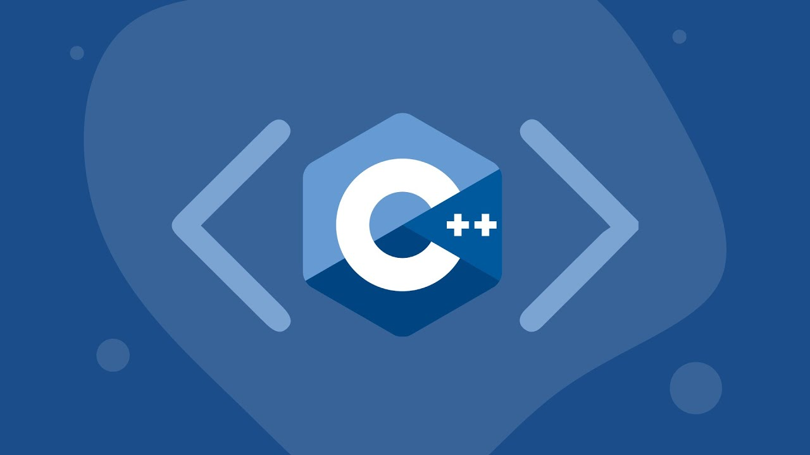

C++ genel amaçlı, nesne yönelimli, yüksek seviyeli bir programlama dilidir. 1979 yılında Bjarne Stroustrup ve ekibi tarafından Bell Labs’da geliştirilmiştir. C++, C dilinden türemiştir, bu nedenle bir çok ortak noktaları vardır. İkisi birbirinden ayıran özellik ise C++’ın nesne yönelimli olmasıdır. Genel olarak, C ile yazılmış her program C++ programıdır, ancak C++ ile yazılmış programlar C programı değildir. C++ ilk olarak C With Classes (Sınıflarla C) olarak adlandırılmıştır. Daha sonra 1983 yılında ismi C++ olarak değiştirilmiştir. C++, Türkçe anlamı ce artı artı, İngilizce telaffuz edilen bu isim si plas plas olarak okunur. C++ yoğun olarak büyük yazılım altyapısı ve sınırlı kaynaklarla çalışan uygulamalar oluşturmak için kullanılır. Günümüzde, C++ ile birçok farklı işletim sistemlerinde veya platformlarında çok kolay çalışabilen programlar üretilebilir. Bu nedenle hala kullanımı yüksektir.
C++ geliştirilmesinin ardından kısa zamanda dünya üzerinde en çok kullanılan programlama dillerinden biri olmuştur. Diğer programlama dillerine kıyasla daha performanslıdır. C++ ile uygulamalar, sürücü yazılımları, kullanıcı taraflı yazılımlar ve daha birçok alanda programlar geliştirilebilir. Günümüzde kullanılan bilgisayarlarda bulunan programlar ve sürücülerin çoğu C++ dili ile yazılmıştır.
C++ kullanmak için birçok sebep bulunmaktadır. Günümüzde kullanılan standart bir bilgisayarların içindeki yazılımların C++ ile kodlanması, bu nedenlerden en önemlisi olabilir. Günümüzde kullanılan en yaygın programlama dillerinden biri olması ve birden fazla platforma uyarlanabilen uygulamaların geliştirilmesi C++ dilini daha da özel yapmaktadır. C, C# ve Java dillerine yakın olduğundan dolayı, bu dilleri bilen birinin C++ diline adapte olması veya C++ dilinden diğer dillere geçmesi çok daha kolay olacaktır.
C++ ile birçok amaca uygun program veya yazılım geliştirilebilir.
C++ ile oyun, masaüstü uygulama, işletim sistemi, tarayıcı gibi birçok program geliştirmek mümkündü
C++ ile kendiniz yeni bir programla dili geliştirebilirsiniz.
C++ ile MySQL ve MongoDB gibi popüler veritabanı araçları oluşturmak mümkündür.
Gümülü sistemler, elekronik kartlar ve hesaplama uygulamaları gibi birçok amaca yönelik program ve yazılım geliştirilebilir.
1979 yılında geliştirilen C++, yıllar boyunca, belirli uygulama türleri için tercih edilen dil haline geldi ve dünyada yaygın olarak kullanılmaya başlandı. Günümüzde hala popülaritesini sürdürmeye devam eden bu programlama dili kolayca bitmeyecek kadar güçlü ve geniş kullanım alanına sahip olduğundan dolayı gelecek uzun yıllar boyunca kullanılmaya devam edecek gibi duruyor.